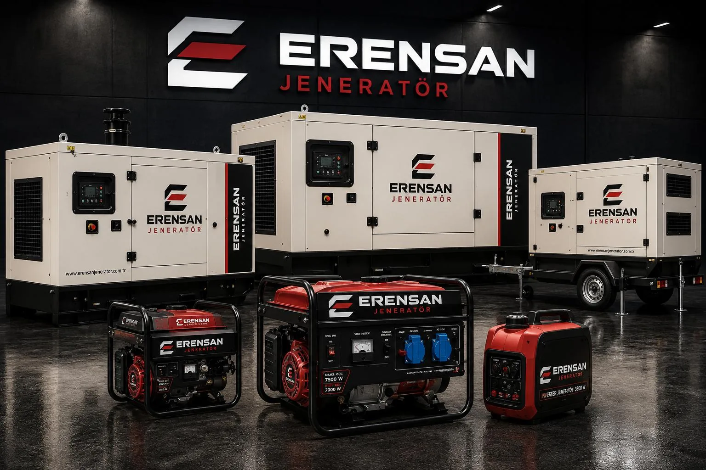
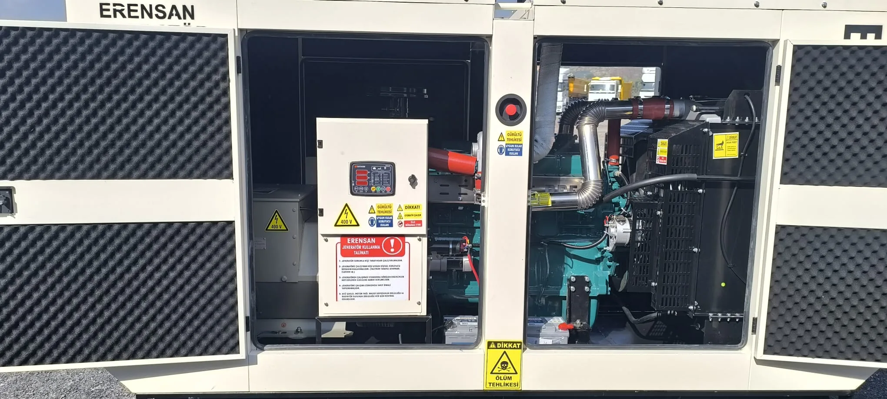
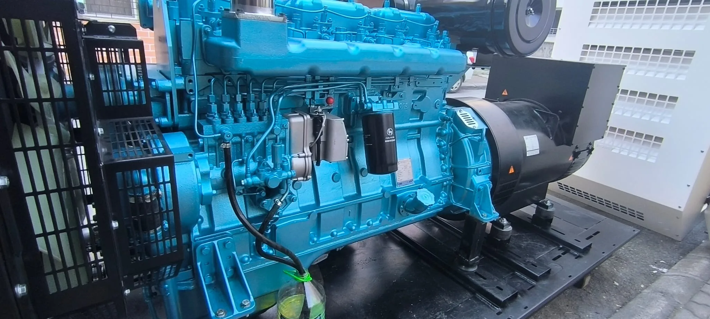
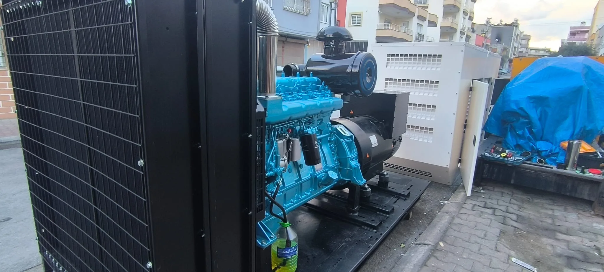
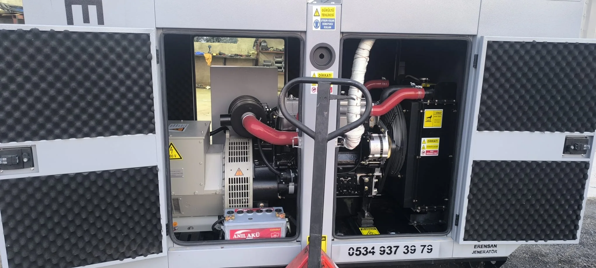
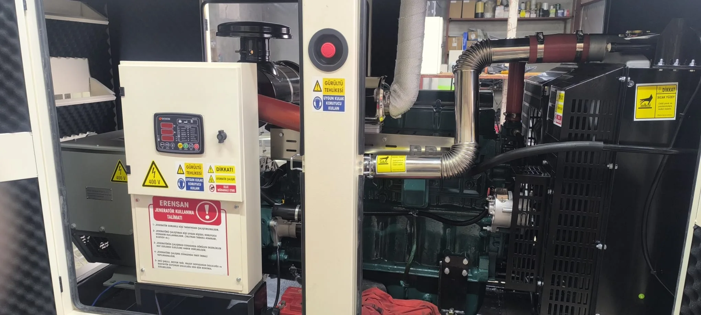
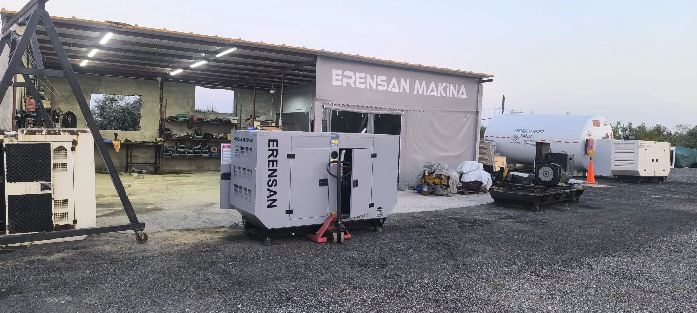
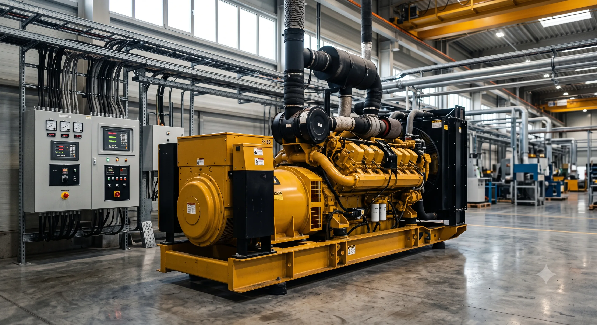
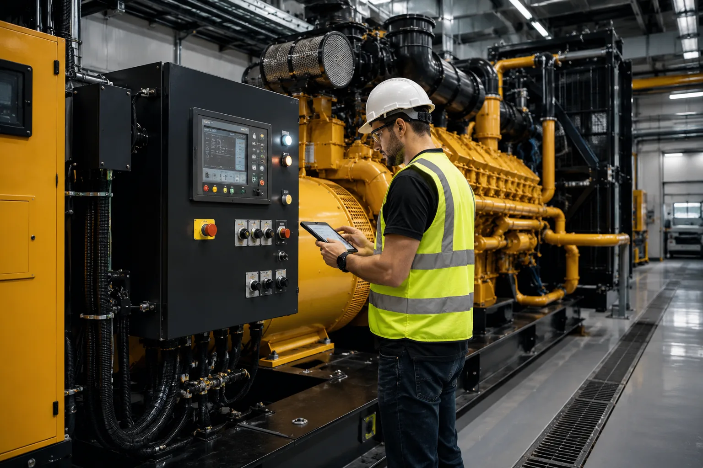

Jeneratör Kiralama
Geçici güç ihtiyacı için saha koşulu, tarih, süre ve yük bilgisine göre kiralama planı.
Kiralama sürecini inceleyin →
Erensan Jeneratör; güç ihtiyacının belirlenmesinden satış veya kiralamaya, kurulumdan bakım, onarım ve yedek parçaya kadar Mersin merkezli jeneratör hizmeti sunar.
Her hizmet sayfası; seçim ölçütlerini, süreci ve teklif için paylaşmanız yararlı olacak bilgileri açıklar.
Geçici güç ihtiyacı için saha koşulu, tarih, süre ve yük bilgisine göre kiralama planı.
Kiralama sürecini inceleyin →Kullanım amacı, yük yapısı, çalışma düzeni ve kurulum ortamına göre satın alma rehberliği.
Satış sayfasına gidin →Arıza belirtisi, marka-model, cihaz etiketi ve konuma göre teknik servis talebi.
Servis desteğini inceleyin →Motor, filtre, akü, soğutma, elektrik ve otomasyon bileşenleri için planlı kontrol.
Bakım kapsamını görün →Belirti ve çalışma koşullarının değerlendirilmesiyle başlayan kontrollü arıza tespiti ve onarım süreci.
Onarım sürecini inceleyin →Doğru parça tespiti için marka-model, parça bilgisi ve cihaz etiketi üzerinden teknik değerlendirme.
Yedek parça bilgisi alın →Satış, kiralama ve servis taleplerinde ilk hedef cihaz önermek değil, gerçek ihtiyacı ve saha koşullarını anlamaktır. Böylece teklif kapsamı ile müşterinin beklediği iş aynı zeminde karşılaştırılabilir.
Hizmet türü, konum, tarih, çalışma süresi ve beslenecek yükler öğrenilir. Servis taleplerinde marka-model, belirti ve panel uyarısı da kaydedilir.
Yük karakteristiği, motor kalkışları, saha erişimi, havalandırma, bağlantı mesafesi ve çalışma ortamı talebin gerektirdiği ölçüde incelenir.
Satın alma, kiralama, bakım veya onarım için uygulanacak iş; cihaz, sevkiyat, kurulum ve teknik destek başlıklarıyla netleştirilir.
Planlanan çalışma tamamlandıktan sonra kurulum veya servis kapsamına uygun kontroller yapılır. Sonraki bakım ve iletişim adımları açıklanır.
Kesin kapasite, arıza nedeni veya uygulama süresi; yük, cihaz ve saha görülmeden garanti edilemez. Bu nedenle WhatsApp görüşmesinde fotoğraf ve temel bilgileri paylaşmak ön değerlendirmeyi kolaylaştırır, ancak iletişim kurmak için zorunlu değildir.
Karar; ihtiyacın süresi, kullanım sıklığı, yük karakteristiği, saha koşulları ve operasyon planına göre verilmelidir.
Atölye, jeneratör kurulumu ve bakım çalışmalarından gerçek işletme fotoğrafları.






Yalnızca cihaz güçlerini toplamak her durumda yeterli değildir. Motor kalkışları, eş zamanlı kullanım, yük türü, çalışma süresi ve gelecekteki yük artışı birlikte değerlendirilmelidir.
Kesin kapasite seçimi yük karakteristiği ve saha koşullarına göre değişebilir. Teknik değerlendirmede cihaz listesi, etiket fotoğrafları ve çalışma senaryosu yararlı olur.
Sanayi tesisi için kVA rehberini okuyun →Toroslar'daki merkezden Mersin geneli için saha koşulu ve hizmet türüne göre planlama yapılır. Her ilçenin sanayi, tarım, turizm ve konut yükleri için hazırlanan yerel rehberlere aşağıdan ulaşabilirsiniz.
Jeneratör seçimi, bakım ve kiralama hakkında gerçek alıcı sorularına odaklanan içerikler.

Asansör, hidrofor, otomatik geçiş, ses ve yerleşimi ortak alan yedeklemesinde planlayın.
Rehberi okuyun →
Yüksüz çalıştırmanın yetmediği yerde ATS, yük ve kayıtla test takvimini kurun.
Teknik yazıyı okuyun →Kritik yük, otomatik geçiş, yakıt ve test takvimini tek belgede toplayın.
Rehberi okuyun →Bilgilerin tamamı hazır olmasa da telefon veya WhatsApp üzerinden iletişime geçebilirsiniz.